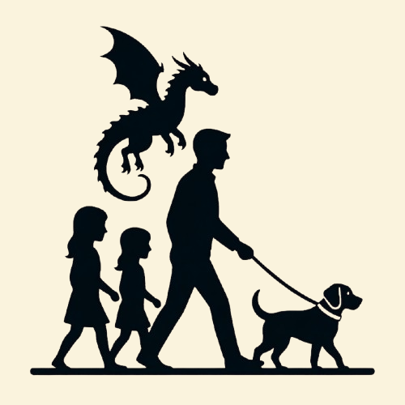
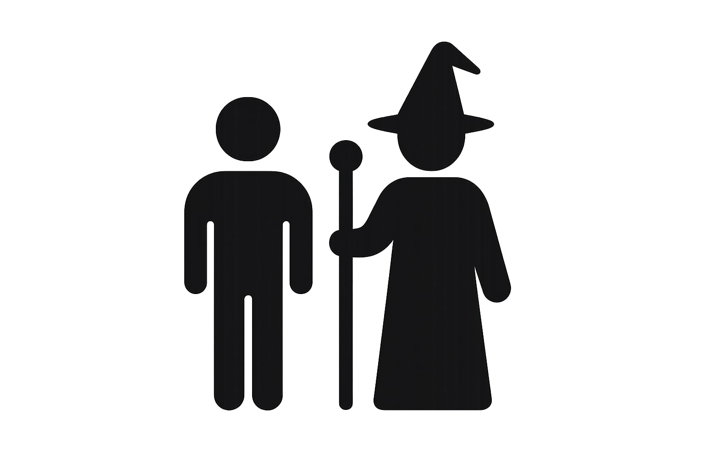

Tanti amici cercano casa: trova il tuo
Lo sapevi che il cane è considerato il migliore amico dell’uomo?
Per noi di Casa Otium tutti gli animali sono migliori amici, scegli il tuo preferito!
Scopri di più
Lo sapevi che il cane è considerato il migliore amico dell’uomo?
Per noi di Casa Otium tutti gli animali sono migliori amici, scegli il tuo preferito!
Scopri di più
Ogni animale che salviamo è una storia. Ecco i numeri che raccontano la nostra.

436
Le famiglie che oggi hanno un cane oppure un piccolo drago.
45k
Pasti magici e crocchette distribuiti nel 2025.

1.6k
Volontari e maghi che hanno donato il loro tempo.

11
I giorni che servono perché il tuo “mostriciattolo” diventi il tuo migliore amico.
Per adottare un animale è importante garantire un ambiente sicuro e una presenza responsabile.
Ecco i requisiti principali:
Per trovare il compagno perfetto e completare l’adozione è sufficiente seguire 5 semplici passaggi:
Una volta che hai scelto i tuoi animali preferiti e visualizzato i loro “bisogni”, clicca su “Adotta”.
Il nostro staff verrà immediatamente notificato e si metterà presto in contatto per un incontro.